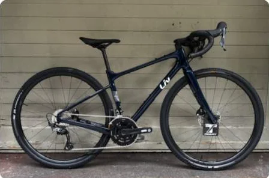
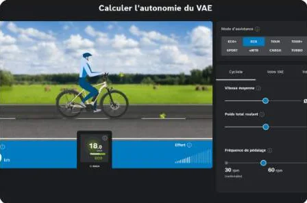
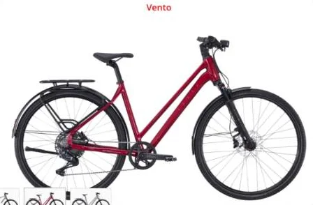

LIV, marque de vélo pour femme

La marque Liv est spécialement conçue pour les femmes.
Nous pouvons commander ces vélos sur demande, et ils seront bientôt visibles au magasin. Retrouvez-les dans la rubrique « Nos vélos ».

La marque Liv est spécialement conçue pour les femmes.
Nous pouvons commander ces vélos sur demande, et ils seront bientôt visibles au magasin. Retrouvez-les dans la rubrique « Nos vélos ».
Nos articles pour bien entretenir votre vélo, suivre la vie du magasin ou en savoir plus sur la mobilité douce à Genève.

Le lien vers l'assistant d'autonomie Bosch, pour estimer jusqu'où vous pouvez aller.

Recharge automatique du dérailleur Cues Q-Auto.
La marque Liv est spécialement conçue pour les femmes.